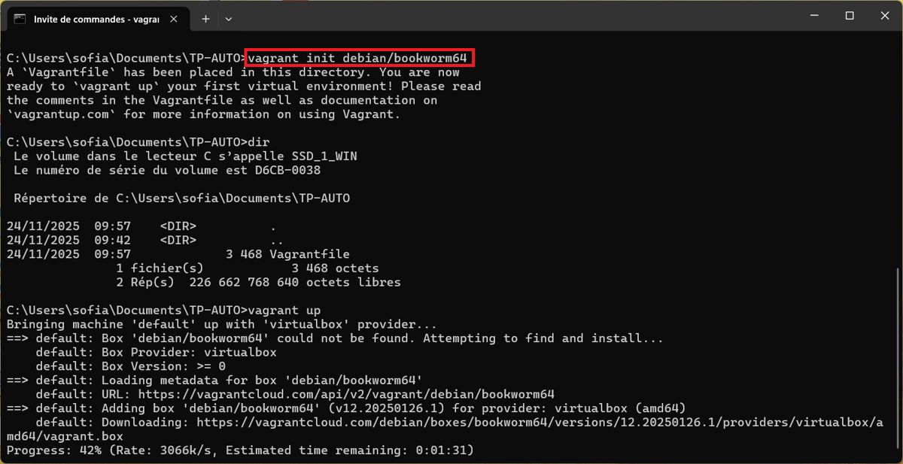
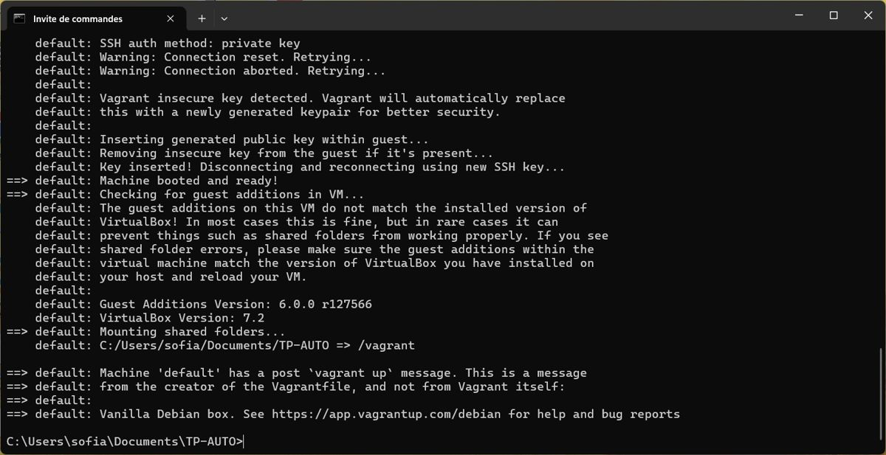
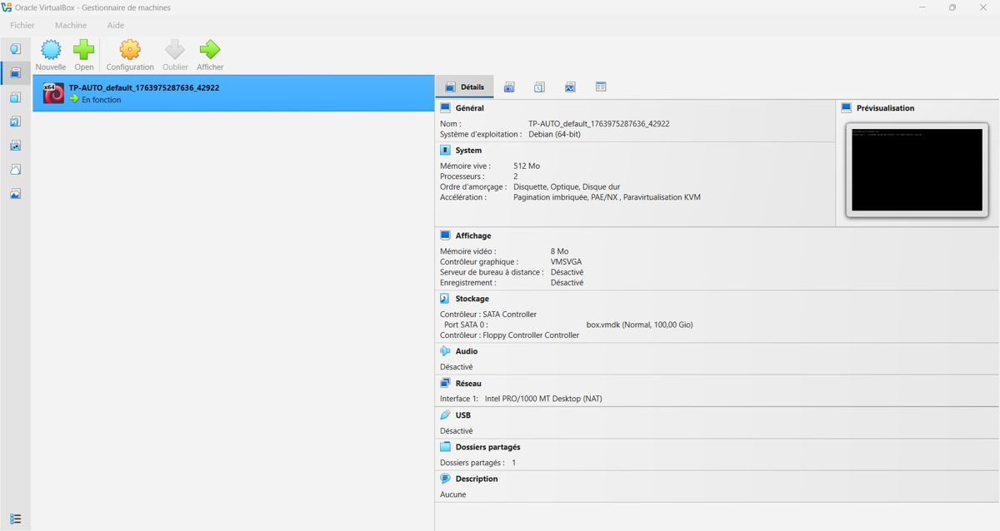

BTS · SISR
Déploiement automatisé avec Vagrant
Créer une machine virtuelle Debian avec une seule commande : infrastructure as code.
- Vagrant
- VirtualBox
- Debian 12
Contexte
Découverte de l'automatisation du déploiement d'environnements de test reproductibles.
Résultat
vagrant up suffit à produire une VM Debian 12 fonctionnelle en quelques minutes, sans partitionnement ni création de compte manuels.
Étapes de réalisation
- Installation. Vagrant 2.4.9 sur Windows 11 avec winget.
- Initialisation. vagrant init debian/bookworm64 génère le Vagrantfile.
- Lancement. vagrant up importe la box, configure le réseau et les clés SSH.
- Contrôle. VM visible dans VirtualBox, état En fonction.
Captures



Difficultés rencontrées
- Erreur DNS lors de l'installation winget, contournée par le téléchargement direct du paquet.
Compétences
- IaC
- Virtualisation
- Automatisation